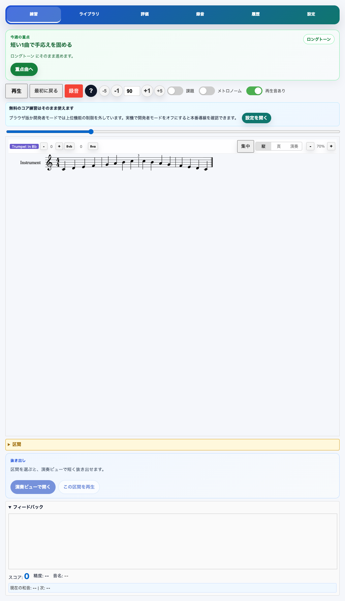
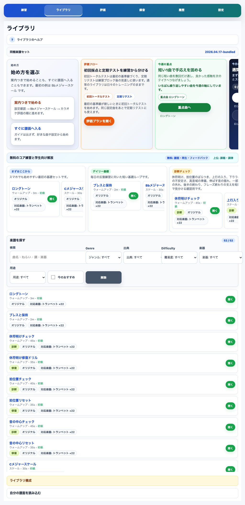
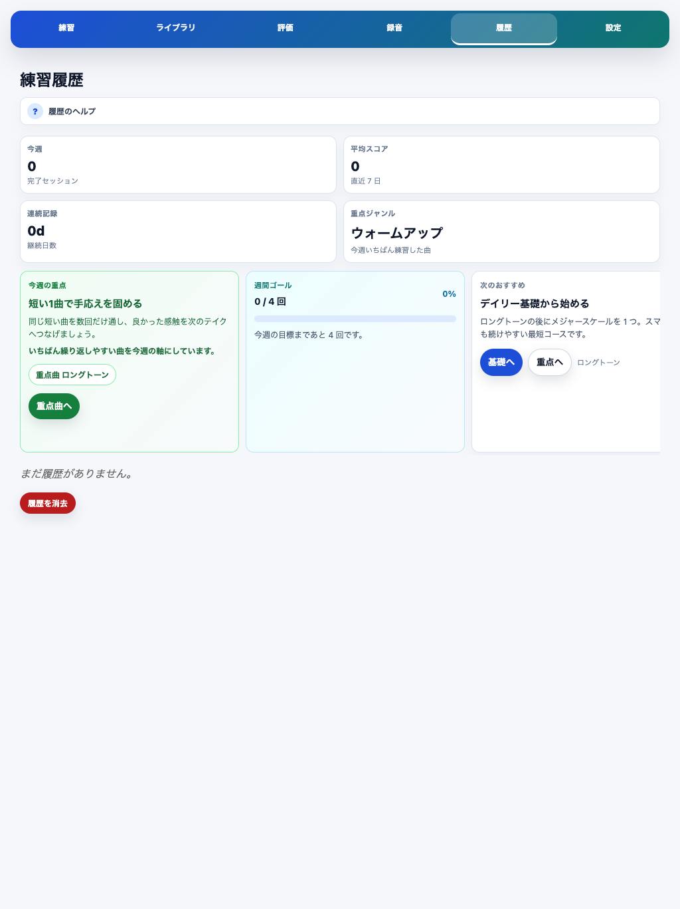

MusicXML 楽譜表示
内蔵練習曲や自分の MusicXML を読み込み、楽譜を見ながら練習できます。曲、診断、リペア練習を同じ練習画面で扱えます。

Score-based practice for brass and wind players
MusicXML の楽譜を見ながら、再生・ループ・マイク音程採点で個人練習を進める iOS アプリです。
Practice with notation, playback, loop controls, recordings, and microphone pitch feedback. Built for focused brass and wind practice on iPhone and iPad.
Release Status
この公開ページは App Store Connect の Marketing / Support / Privacy URL として使えるように準備したものです。App Store 公開URLは審査通過後に差し替えます。
What It Does
Brass Practice は、普通のメトロノームや録音アプリより一歩だけ練習に踏み込みます。楽譜、音、実音入力、結果を同じ流れで扱います。
内蔵練習曲や自分の MusicXML を読み込み、楽譜を見ながら練習できます。曲、診断、リペア練習を同じ練習画面で扱えます。
テンポ変更、カウントイン、A-B ループで、通し練習と部分練習を切り替えられます。苦手な小節を短く反復できます。
マイクで演奏中のピッチを検出し、通し後にピッチ、タイミング、伸ばし方の傾向を確認できます。採点はデフォルトでオフにできます。
Screens
公開サイトでは実際のアプリ画面を前面に出します。提出時は最終 build のスクリーンショットに差し替えてください。
楽譜、再生、ループ、採点トグルを1つの練習画面にまとめます。

内蔵練習曲、診断、リペア練習、MusicXML 読み込みを扱います。

練習結果と録音を端末内で振り返ります。
Privacy And Ads
初回リリースでは reward-only の広告方針です。高度な採点・レビュー機能は、報酬広告1回で7分間解放されます。
Public Links
マイク、音が出ない、報酬広告、録音、ローカルAIの確認項目をまとめています。
Support を開くマイク、録音、MusicXML、練習履歴、AdMob の扱いを説明します。
Privacy を開く広告解放、MusicXML、iPad、ローカルAIなど、提出前に聞かれやすい質問をまとめています。
FAQ を開く